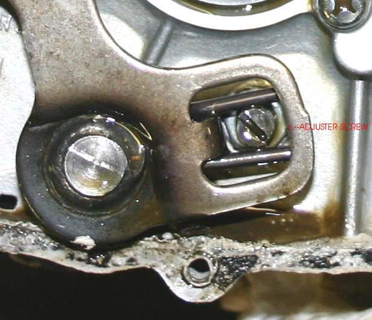
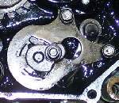

The gear lever needs a hard push, gears go in with a crunch, or sometimes they will not go in at all. The K-Light fault chart checks, in order: idle speed, how the rider changes gear, whether the clutch fully releases, and only then the shift shaft and the parts inside the gearbox. Most cases end at the clutch or the lever, not inside the engine.
Is it safe to ride?
Ride with care. A gear that will not go in when you need it, or a missed change in traffic, can leave you without drive at the wrong moment.
Quick checks first
- Is it hard in every gear, or only one?
- Is it hard with the engine off as well as running? Rock the bike or turn the rear wheel by hand while you try.
- Does the bike creep in gear with the clutch lever pulled?
- Is anything (mud, a bent lever, your boot) stopping the lever's full stroke?
- After a gearbox rebuild the change can feel stiff or chunky. If the shafts turn freely by hand and every gear can be selected while the shaft is spun, this is usually normal and eases with use.
Diagnose it step by step
1With the engine off, turn the rear wheel by hand (bike on the stand) and change through the gears. Are they easy?
- Yes, easy with the engine off but hard when running: the clutch is not releasing, or idle is high. Go to step 2.
- No, hard even with the engine off: go to step 4.
2Does the bike creep or lurch in gear with the lever pulled, or is the free play too large?
- Yes: Adjust clutch lever free play, then Clutch drags. Semi-automatic: Semi-automatic clutch slips or engages roughly.
- No: go to step 3.
3Is the idle speed higher than specified? (K-Light 125: 1500 ± 100 rpm.)
- Yes: Idle speed is too high.
- No: check technique: close the throttle, pull the clutch fully, change with a firm, complete stroke. If it is still hard, go to step 4.
4Is the lever straight, firm on its shaft, free on its pivot and not touching the case or footpeg?
- No: Check the gear lever and shift linkage; a stiff pedal pivot: Service footpegs and foot pedals.
- Yes: go to step 5.
5Is the oil level correct and the oil not old or very thick?
- No: Check the engine oil level, Change the engine oil.
- Yes: go to step 6.
6Still hard after all the above, or one gear refuses completely?
- The shift spindle may be bent, the return spring weak, the drum grooves worn or a fork bent or broken. Go to Assess internal gearbox faults. Do not force the lever; that bends forks.
Causes, most likely first
| Cause | How to confirm | Fix |
|---|---|---|
| Clutch drag | Easy with engine off, hard running | Adjust clutch lever free play |
| High idle | Revs above specification | Idle speed is too high |
| Lever or linkage stiff, bent or blocked | Hard with engine off too; visible problem | Check the gear lever and shift linkage |
| Old or wrong oil | Improves after oil change | Change the engine oil |
| Warped clutch plates | Drag remains with correct free play | Inspect and replace clutch plates and springs |
| Bent spindle, worn drum, bent fork | Persists after all the above | Assess internal gearbox faults |
Reference values (K-Light 125)
| Item | Value | Source |
|---|---|---|
| Idle speed | 1500 ± 100 rpm | K-Light 125 manual, PDF p. 49 |
| Clutch lever free play | 10 to 15 mm | K-Light 125 manual, PDF p. 69 |